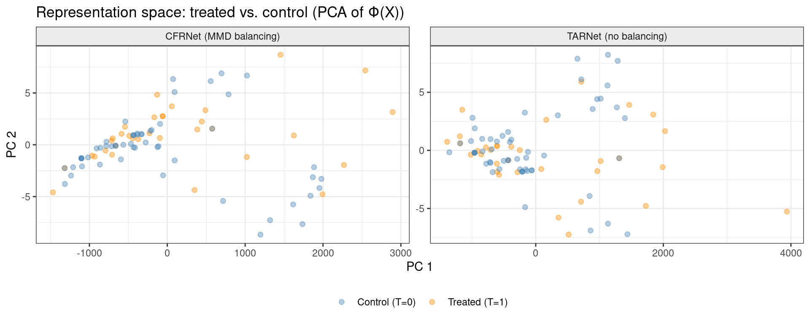
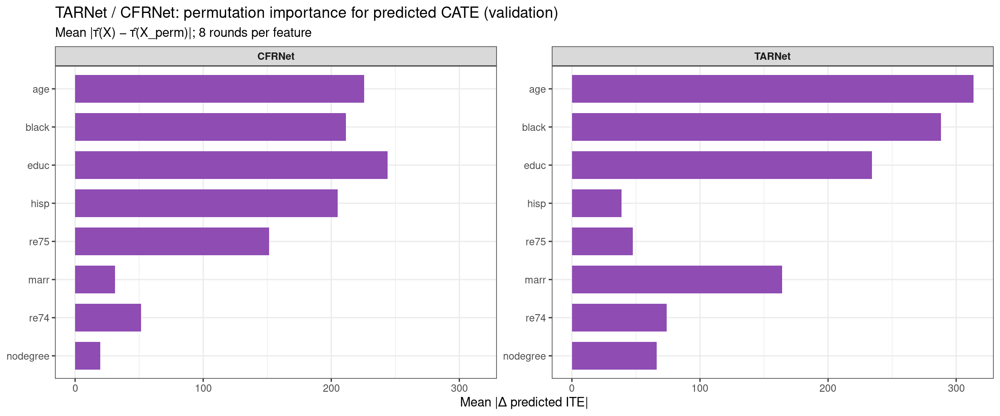

Code
packages <- c(
"tidyverse",
"plyr",
"RCausalML",
"causaldata",
"mlbench",
"xgboost",
"future"
)

CFRNet is a direct extension of TARNet, introduced in the same 2017 paper by Shalit, Johansson & Sontag — “Estimating individual treatment effects: generalization bounds and algorithms.” It solves TARNet’s biggest weakness: selection bias in the representation space.
CFRNet retains the same shared representation network and separate heads for treated/control as TARNet, but adds a crucial IPM regularizer that forces the learned representations of treated and control patients to overlap in distribution space. This encourages the model to learn features that are predictive of outcomes but not predictive of treatment assignment, which is key for reliable counterfactual estimation.
CFRNet is TARNet plus one crucial extra component: an IPM regularizer that forces the learned representations of treated and control patients to overlap in distribution space. Here is the full architecture:

The Integral Probability Metric (IPM) is a statistical distance measure between two probability distributions. In CFRNet, it measures how different the representation distributions of the treated group and the control group are in the learned feature space Φ.
The two most common IPM choices used with CFRNet are:
The training loss becomes:
\[\mathcal{L} = \mathcal{L}_{\text{factual}} + \lambda \cdot \text{IPM}\!\left(\Phi(X)\mid t=1,\; \Phi(X)\mid t=0\right)\]
where \(\mathcal{L}_{\text{factual}}\) is the standard prediction loss (MSE on observed outcomes), and \(\lambda\) is a hyperparameter controlling how aggressively to enforce distributional balance.
This is the intuition behind why the IPM penalty is needed. Without it, the representation space can encode treatment assignment, making counterfactual estimation unreliable.

Step 1 — Forward pass through Φ. All patients (both treated and control) are passed through the shared representation network to produce Φ(x). This produces two clouds of points in representation space — one for each treatment group.
Step 2 — Outcome prediction. Each patient’s representation \(\Phi(x)\) is passed through their respective head (\(h_0\) or \(h_1\), depending on which treatment they actually received) to produce a factual outcome prediction. The factual MSE loss is computed here.
Step 3 — IPM computation. The IPM distance between the distribution of { Φ(x) : t=0 } and { Φ(x) : t=1 } is computed. A large IPM means the treated and control patients live in different regions of representation space — that’s selection bias baked into Φ.
Step 4 — Combined loss + backprop. The total loss \(\mathcal{L}_{\text{factual}} + \lambda \cdot \text{IPM}\) is backpropagated. The IPM term forces the shared network to “push” the two distributions toward each other, so that factual and counterfactual predictions extrapolate to the same region of feature space.
Step 5 — ITE at inference. For any new patient \(x\), pass through \(\Phi\) once, then both heads, and subtract: \(\text{ITE}(x) = h_1(\Phi(x)) - h_0(\Phi(x))\).
| TARNet | CFRNet | |
|---|---|---|
| Shared representation | Yes | Yes |
| Separate treatment heads | Yes | Yes |
| IPM distribution alignment | No | Yes |
| Handles selection bias | Partially | More robustly |
| Theoretical bound on ITE error | Weaker | Tighter (Shalit et al.) |
| Extra hyperparameter | — | λ (balance strength) |
The paper by Shalit et al. proves a formal generalization bound showing that the ITE estimation error decomposes into a factual prediction error term plus an IPM term — which is precisely why minimizing the IPM during training provably reduces counterfactual error. This theoretical guarantee is what distinguishes CFRNet from simpler heuristics.
The hyperparameter λ controls the bias-variance tradeoff:
In practice, λ values between 0.1 and 10 are most common depending on the degree of confounding in the dataset.
CFRNet and TARNet are implemented in RCausalML as cfrnet() and tarnet(). With torch installed, these functions train deep neural networks with the architectures and losses described above. If torch is not available, they fall back to simpler models that mimic the two-head structure but without deep representation learning or explicit balancing.
Following R packages are required to run this notebook. If any of these packages are not installed, you can install them using the code below:
tidyverse, plyr, RCausalML, causaldata, mlbench, xgboost, future
packages <- c(
"tidyverse",
"plyr",
"RCausalML",
"causaldata",
"mlbench",
"xgboost",
"future"
)# Install missing packages
# new_packages <- packages[!(packages %in% installed.packages()[, "Package"])]
# if (length(new_packages)) install.packages(new_packages)# Load packages with suppressed messages
invisible(lapply(packages, function(pkg) {
suppressPackageStartupMessages(library(pkg, character.only = TRUE))
}))# Check loaded packages
cat("Successfully loaded packages:\n")Successfully loaded packages: [1] "package:future" "package:xgboost" "package:mlbench"
[4] "package:causaldata" "package:RCausalML" "package:plyr"
[7] "package:lubridate" "package:forcats" "package:stringr"
[10] "package:dplyr" "package:purrr" "package:readr"
[13] "package:tidyr" "package:tibble" "package:ggplot2"
[16] "package:tidyverse" "package:stats" "package:graphics"
[19] "package:grDevices" "package:utils" "package:datasets"
[22] "package:methods" "package:base" Full CFRNet uses torch. Install once if needed:
# install.packages("torch")
# library(torch)
# torch::install_torch()We use NSW (nsw_mixtape) from causaldata: treatment treat, outcome re78, covariates age, educ, black, hisp, marr, nodegree, re74, re75. After dropping incomplete rows, we split into train and validation; covariates are standardized using the training mean and SD only.
if (!requireNamespace("causaldata", quietly = TRUE)) install.packages("causaldata")
data(nsw_mixtape, package = "causaldata")
df <- as.data.frame(nsw_mixtape)
df$treat <- as.integer(df$treat)
y_col <- "re78"
t_col <- "treat"
x_cols <- c("age", "educ", "black", "hisp", "marr", "nodegree", "re74", "re75")
df <- df[complete.cases(df[, c(y_col, t_col, x_cols)]), ]
p_train <- 0.8
n <- nrow(df)
idx <- sample.int(n, size = round(p_train * n))
df_train <- df[idx, ]
df_val <- df[-idx, ]
X_train_raw <- as.matrix(df_train[, x_cols])
X_val_raw <- as.matrix(df_val[, x_cols])
cm <- colMeans(X_train_raw)
cs <- apply(X_train_raw, 2, stats::sd)
cs[cs == 0] <- 1
X_train <- scale(X_train_raw, center = cm, scale = cs)
X_val <- scale(X_val_raw, center = cm, scale = cs)
t_train <- as.integer(df_train[[t_col]])
y_train <- as.numeric(df_train[[y_col]])
t_val <- as.integer(df_val[[t_col]])
y_val <- as.numeric(df_val[[y_col]])
cat(
"Train n =", nrow(X_train), "| Val n =", nrow(X_val),
"| p =", ncol(X_train), "| TARNet/CFRNet source: R/causalDeepNet.R\n"
)Train n = 356 | Val n = 89 | p = 8 | TARNet/CFRNet source: R/causalDeepNet.RWe fit TARNet as a baseline and CFRNet with MMD balancing. Hyperparameters hidden, batch_size, epochs, learning rate (lr, here (10^{-3})), and (for CFRNet) mmd_weight and sigma_mmd match the defaults documented in causalDeepNet.R.
if (requireNamespace("torch", quietly = TRUE)) {
library(torch)
torch_manual_seed(42)
}
fit_tarnet <- tarnet(
X_train, t_train, y_train,
hidden = c(200L, 200L, 100L),
batch_size = 64L,
val_split = 0.2,
epochs = 100L,
lr = 0.001,
verbose = TRUE
)
fit_cfrnet <- cfrnet(
X_train, t_train, y_train,
hidden = c(200L, 200L, 100L),
mmd_weight = 0.1,
sigma_mmd = 1,
batch_size = 64L,
val_split = 0.2,
epochs = 100L,
lr = 0.001,
verbose = TRUE
)
cat("Fitted backends — TARNet:", fit_tarnet$type, "| CFRNet:", fit_cfrnet$type, "\n")Fitted backends — TARNet: tarnet_torch | CFRNet: cfrnet_torch We project the learned representation ((X)) onto the first two principal components and scatter treated vs. control in that space. More overlap between arms in ()-space is consistent with better balancing (CFRNet encourages this via MMD on ()); separated clouds suggest the representation still encodes treatment-assignment structure, which can hurt counterfactual extrapolation.
We use the validation covariates X_val and treatment t_val. The plot requires the torch backends; with fallbacks there is no shared () layer to visualize in the same way.
#' PCA scatter of Phi(X) for treated vs control (torch models only).
plot_representation_balance <- function(fit_tarnet, fit_cfrnet, X, T_vec,
title = "Representation space: treated vs. control") {
torch_ok <- function(fit) {
identical(fit$type, "tarnet_torch") || identical(fit$type, "cfrnet_torch")
}
if (!torch_ok(fit_tarnet) || !torch_ok(fit_cfrnet)) {
return(
ggplot2::ggplot() +
ggplot2::annotate(
"text",
x = 0.5,
y = 0.5,
label = "Representation plot needs torch backends.\nInstall torch, re-fit, and re-render.",
size = 4
) +
ggplot2::lims(x = c(0, 1), y = c(0, 1)) +
ggplot2::theme_void() +
ggplot2::labs(title = "PCA of Phi(X) — not available")
)
}
phi_matrix <- function(fit, X_mat) {
fit$model$eval()
torch::with_no_grad({
x_t <- torch::torch_tensor(X_mat, dtype = torch::torch_float32())
out <- fit$model(x_t)
as.matrix(as_array(out$phi))
})
}
pca_coords <- function(phi, label) {
pc <- stats::prcomp(phi, center = TRUE, scale. = FALSE)
data.frame(
PC1 = pc$x[, 1L],
PC2 = pc$x[, 2L],
treatment = factor(
T_vec,
levels = c(0L, 1L),
labels = c("Control (T=0)", "Treated (T=1)")
),
panel = label
)
}
phi_t <- phi_matrix(fit_tarnet, X)
phi_c <- phi_matrix(fit_cfrnet, X)
plot_df <- rbind(
pca_coords(phi_t, "TARNet (no balancing)"),
pca_coords(phi_c, "CFRNet (MMD balancing)")
)
ggplot2::ggplot(plot_df, ggplot2::aes(PC1, PC2, color = treatment)) +
ggplot2::geom_point(alpha = 0.4, size = 1.8) +
ggplot2::facet_wrap(~panel, nrow = 1L, scales = "free") +
ggplot2::scale_color_manual(
values = c("Control (T=0)" = "steelblue", "Treated (T=1)" = "darkorange")
) +
ggplot2::labs(
title = title,
x = "PC 1",
y = "PC 2",
color = NULL
) +
ggplot2::theme_bw() +
ggplot2::theme(
legend.position = "bottom",
strip.background = ggplot2::element_rect(fill = "grey92")
)
}
plot_representation_balance(
fit_tarnet,
fit_cfrnet,
X_val,
t_val,
title = "Representation space: treated vs. control (PCA of Φ(X))"
)
For each unit, ((x) = (1 x) - (0 x)); ( = _i (x_i)).
TARNet ATE (val): 1909.03 CFRNet ATE (val): 1863.4 Naive diff-in-means (val, biased under confounding): 2353.46 We measure how much predicted CATE ((X)) on the validation fold depends on each covariate using permutation importance: for feature (j), permute column (j) within the validation matrix, recompute (), and take the mean absolute change (|(X) - (X^{}_j)|), averaged over several random permutations. This summarizes the fitted CATE surfaces; it is not a causal attribution of heterogeneity.
pred_ite_repr <- function(fit, Xm) {
r <- predict(fit, as.matrix(Xm))
if (is.list(r)) {
if (!is.null(r$ite)) return(as.numeric(r$ite))
if (!is.null(r$predictions)) return(as.numeric(r$predictions))
num_el <- r[sapply(r, is.numeric)]
if (length(num_el)) {
v <- as.numeric(unlist(num_el))
nr <- nrow(as.matrix(Xm))
if (length(v) >= nr) return(v[seq_len(nr)])
}
stop("Cannot extract ITE vector from predict() for this fit.")
}
as.numeric(r)
}
repr_for_perm <- list(
TARNet = fit_tarnet,
CFRNet = fit_cfrnet
)
imp_repr <- NULL
if (nrow(X_val) >= 10L) {
p <- ncol(X_val)
feat_names <- colnames(X_val)
if (is.null(feat_names)) feat_names <- x_cols
n_rep <- 8L
set.seed(4343L)
imp_chunks <- vector("list", length(repr_for_perm))
names(imp_chunks) <- names(repr_for_perm)
for (lab in names(repr_for_perm)) {
fit_i <- repr_for_perm[[lab]]
ite_base <- pred_ite_repr(fit_i, X_val)
imp_mat <- matrix(NA_real_, nrow = n_rep, ncol = p)
for (r in seq_len(n_rep)) {
for (j in seq_len(p)) {
Xp <- X_val
Xp[, j] <- sample(Xp[, j])
imp_mat[r, j] <- mean(abs(ite_base - pred_ite_repr(fit_i, Xp)), na.rm = TRUE)
}
}
imp_mean <- colMeans(imp_mat, na.rm = TRUE)
imp_chunks[[lab]] <- data.frame(
feature = feat_names,
importance = imp_mean,
model = lab,
stringsAsFactors = FALSE
)
}
imp_repr <- dplyr::bind_rows(imp_chunks)
n_facets <- length(repr_for_perm)
print(
ggplot2::ggplot(
imp_repr,
ggplot2::aes(
x = stats::reorder(factor(feature), importance),
y = importance
)
) +
ggplot2::geom_col(fill = "#8F4CB3", width = 0.72) +
ggplot2::facet_wrap(~model, scales = "free_y", ncol = min(3L, n_facets)) +
ggplot2::coord_flip() +
ggplot2::labs(
title = "TARNet / CFRNet: permutation importance for predicted CATE (validation)",
subtitle = paste0("Mean |\u03c4\u0302(X) \u2212 \u03c4\u0302(X_perm)|; ", n_rep, " rounds per feature"),
x = NULL,
y = "Mean |\u0394 predicted ITE|"
) +
ggplot2::theme_bw() +
ggplot2::theme(strip.text = ggplot2::element_text(face = "bold"))
)
}
This section introduced CFRNet, a powerful extension of TARNet that incorporates an IPM regularizer to encourage balanced representations between treated and control groups. By minimizing the distributional distance in representation space, CFRNet aims to reduce selection bias and improve counterfactual estimation. We implemented CFRNet in R using RCausalML and visualized the balancing effect on the learned representations. Finally, we predicted ITEs and ATEs on the validation set and computed permutation importance for the predicted CATE surfaces.